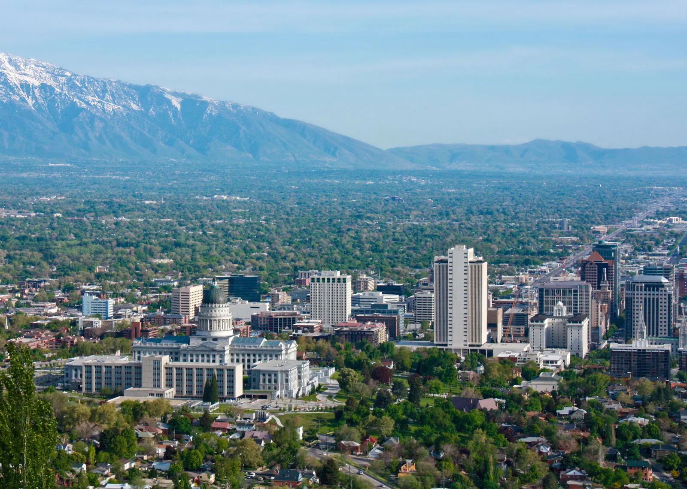
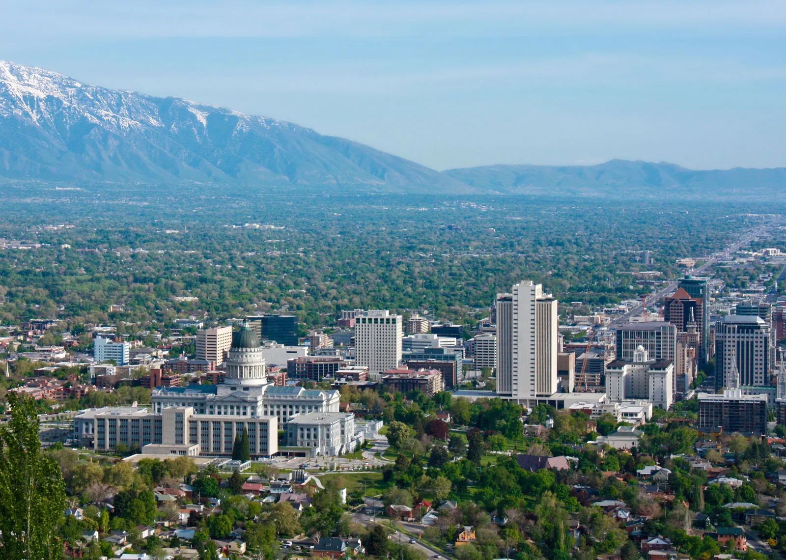

Utah is a landlocked state in the Mountain West subregion of the Western United States. It borders Colorado to its east, Wyoming to its northeast, Idaho to its north, Arizona to its south, and Nevada to its west. Utah also touches a corner of New Mexico in the southeast. Of the fifty U.S. states, Utah is the 13th-largest by area; with a population over three million, it is the 30th-most-populous and 11th-least-densely populated. Urban development is mostly concentrated in two areas: the Wasatch Front in the north-central part of the state, which is home to roughly two-thirds of the population and includes the capital city, Salt Lake City; and Washington County in the southwest, with more than 180,000 residents.[9] Most of the western half of Utah lies in the Great Basin.
The name Utah derives from the name of the Ute tribe, meaning 'people of the mountains'.[22] However, no such word exists in the Utes' language, and the Utes refer to themselves as Noochee. The meaning of Utes as 'the mountain people' has been attributed to the neighboring Pueblo Indians,[23] as well as to the Apache word Yuttahih, which means 'one that is higher up' or 'those that are higher up'.[22] In Spanish, it was pronounced Yuta; subsequently, English-speaking people may have adapted the word as Utah.
 
